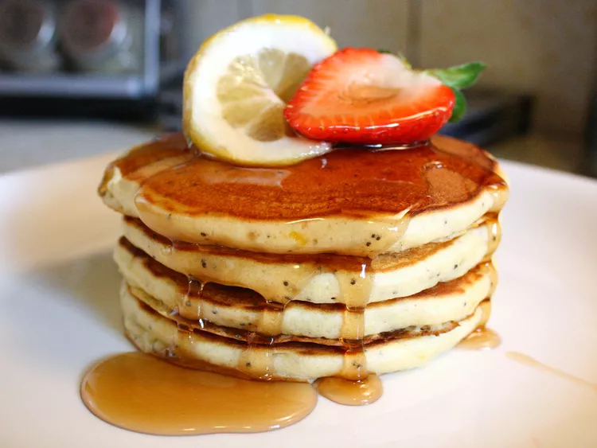

Lemon Poppy Seed Pancakes

Description
I love lemon poppy seed muffins and who doesn't love pancakes? So I
brought the flavors together in this fluffy pancake recipe one lazy
Sunday morning, and we loved them. It's quick to make and adds a little
something extra to our weekend breakfasts. I hope you enjoy them on YOUR
lazy Sunday morning.
Ingredients
- 3/4 cup milk
- 1 tablespoon vinegar
- 1 tablespoon lemon juice
- 1 egg
- 2 tablespoons butter, melted
- 1/2 teaspoon vanilla extract
- 1 cup all-purpose flour
- 2 tablespoons white sugar
- 1 teaspoon baking powder
- 1/2 teaspoon baking soda
- 1/2 teaspoon salt
- 1 teaspoon poppy seeds
- 1 teaspoon lemon zest
- cooking spray
Directions
- Stir the milk, vinegar, and lemon juice together in a bowl; let stand
10 minutes to curdle. Whisk in egg, butter, and vanilla extract.
- In a separate bowl, mix together the flour, sugar, baking powder, baking
soda, salt, poppy seeds, and lemon zest until well combined. Pour the
milk mixture into the flour mixture and whisk a few times until the batter
is mostly free of lumps.
- Heat a skillet over medium heat and spray with cooking spray. Pour 1/4
cup of batter per pancake into the skillet and cook until bubbles appear
on the surface, about 2 minutes. Flip the pancakes over with a spatula and
brown the other side, about 2 more minutes.